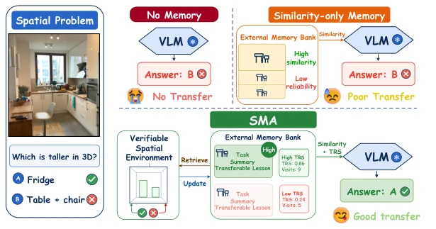
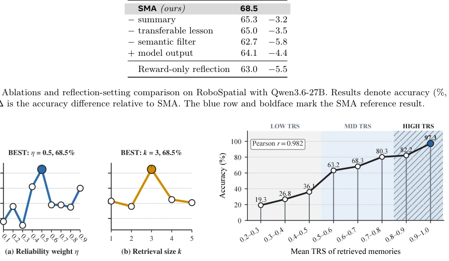
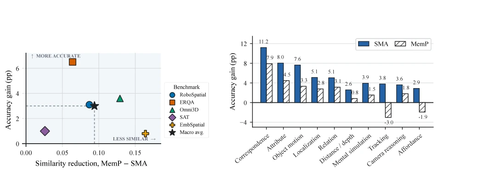
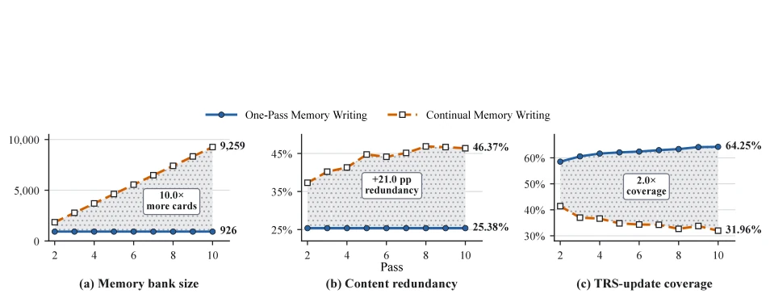
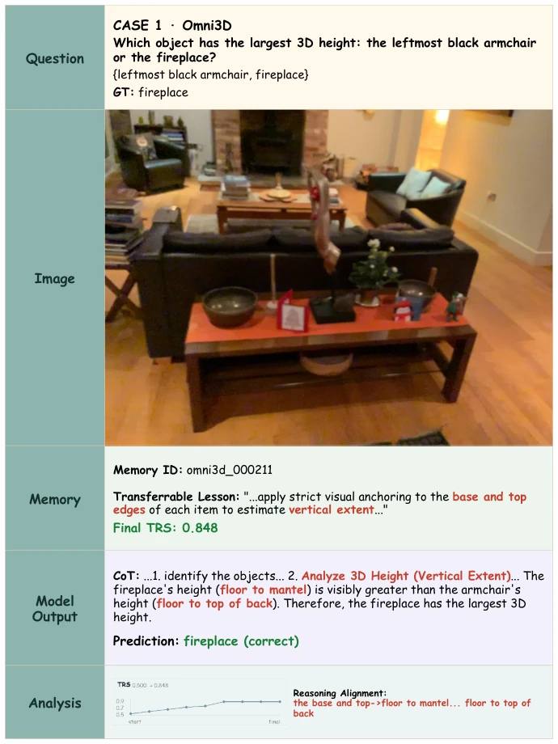
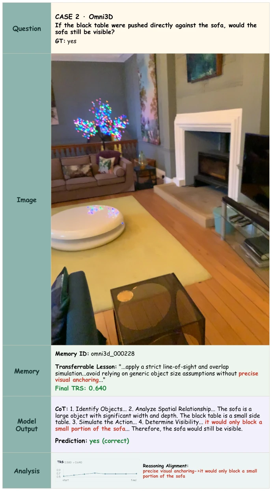
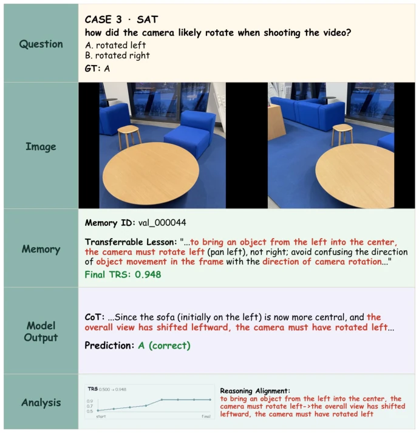
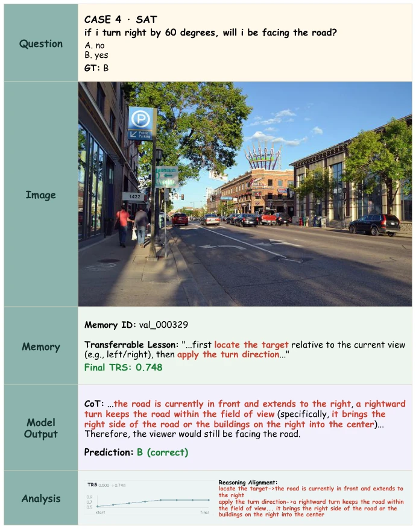

当前提升 VLM 空间推理能力主要走两条路：一是后训练，比如 SpatialVLM 通过指令数据微调 (Chen et al., 2024)，RoboSpatial 结合 2D/3D 数据训练 (Song et al., 2026)；二是智能体范式，调用外部工具如深度估计或 3D 重建 (S-Agent, Dai et al., 2026; SpaceTools, Chen et al., 2026)。前者依赖参数更新，成本高且易遗忘；后者推理时依赖外部专家工具，增加了系统复杂度和延迟。作者想探索第三条路：冻结 VLM 能否在不改权重、不依赖外部工具的情况下，通过外部记忆库实现自我进化？这不仅是效率问题，更是迁移学习的关键——不是死记硬背实例，而是提炼可复用的经验。现有自进化记忆方法多针对文本智能体 (Chhikara et al., 2025; Xu et al., 2025)，缺乏针对空间推理的可靠性评估，SMA 试图填补这一空白，解决空间推理中经验难以复用和评估的问题。
—

Figure 2 Conceptual overview of training-free spatial intelligence growth with the Spatial Memory Agent (SMA). SMA leaves the frozen VLM parameters unchanged, writes verifier-grounded spatial experience into a reusable memory bank, estimates the transfer reliability of each memory, and retrieves the most reliable procedures for read-only deployment on new spatial tasks.
Figure 3 System methodology and workflow of the Spatial Memory Agent (SMA). During memory writing, a frozen vision-language model solves verifiable spatial problems and a reflection step compresses each rollout into a procedural memory. During read-only deployment, semantic similarity filters the memory bank to retrieve candidates, while the verifier-derived transfer reliability score (TRS) ranks those candidates before they guide new tasks; model parameters and the memory bank remain unchanged during deployment.
Figure 1 Performance comparison of SMA and evaluated memory baselines across seven spatial benchmarks (RoboSpa- tial, ERQA, Omni3D, SAT, SITE-image, ViewSpatial, and EmbSpatial) plus their macro average. Each of the four radial panels corresponds to one frozen base model, and each benchmark sector reports the accuracy of all evaluated memory methods for that model panel.

Figure 4 Hyperparameter sensitivity and transfer-reliability diagnostics for Qwen3.6-27B.

Figure 5 Transfer diagnostics: similarity reduction and atomic spatial ability gains across the evaluated benchmarks and base models.

Figure 6 Memory-writing protocol scaling of Qwen3.6-27B over RoboSpatial, ERQA, Omni3D, EmbSpatial and SAT across ten passes. Compared with One-Pass Memory Writing, Continual Memory Writing expands bank size and redundancy while lowering TRS-update coverage.
其他图片Other Figures

Figure 9 Omni3D: successful transfer for 3D spatial reasoning.

Figure 10 Omni3D: successful transfer for 3D spatial reasoning.

Figure 11 SAT: successful transfer for temporal spatial reasoning.

Figure 12 SAT: successful transfer for temporal spatial reasoning.